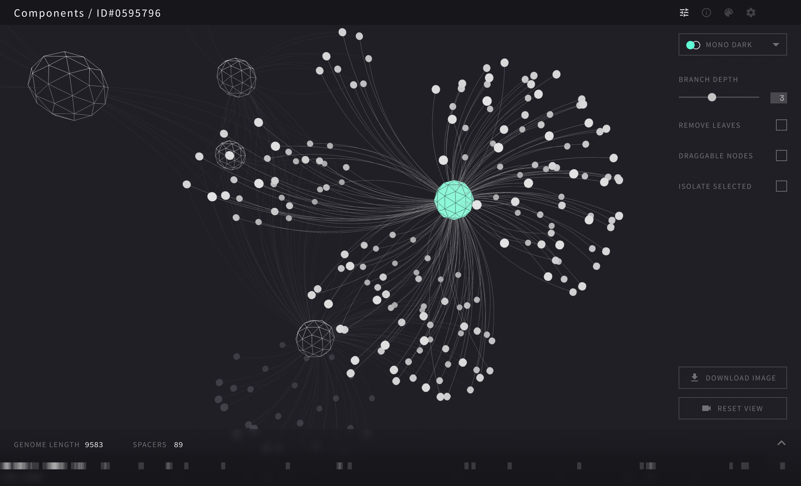
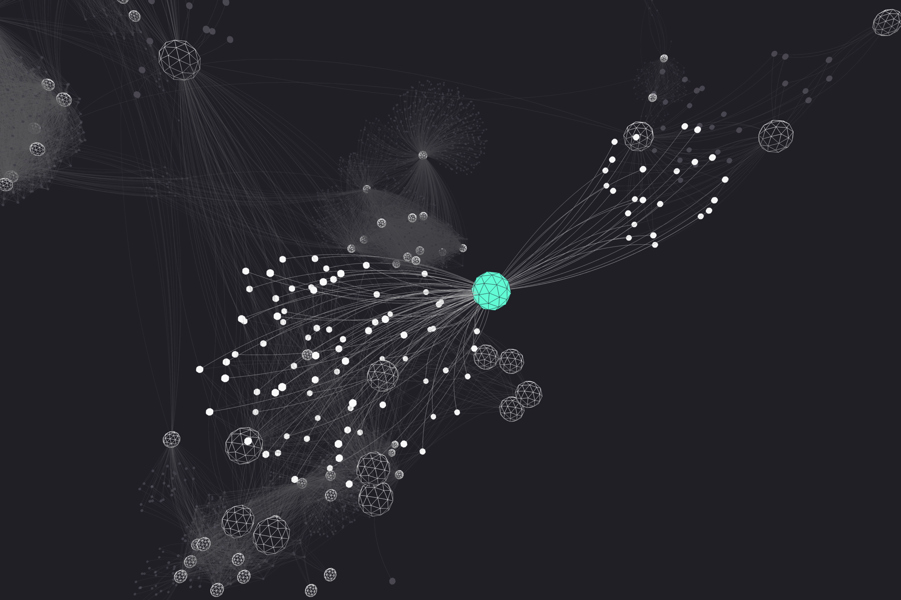
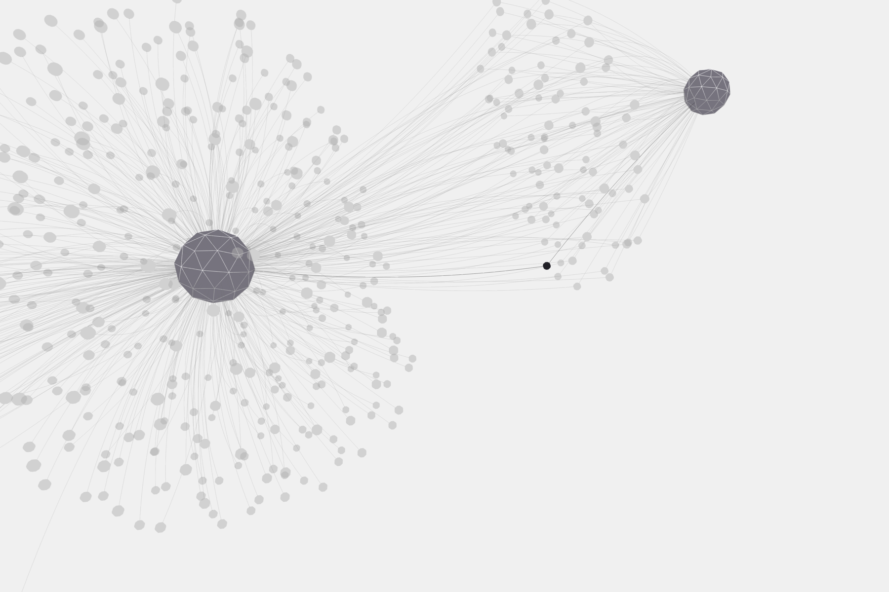
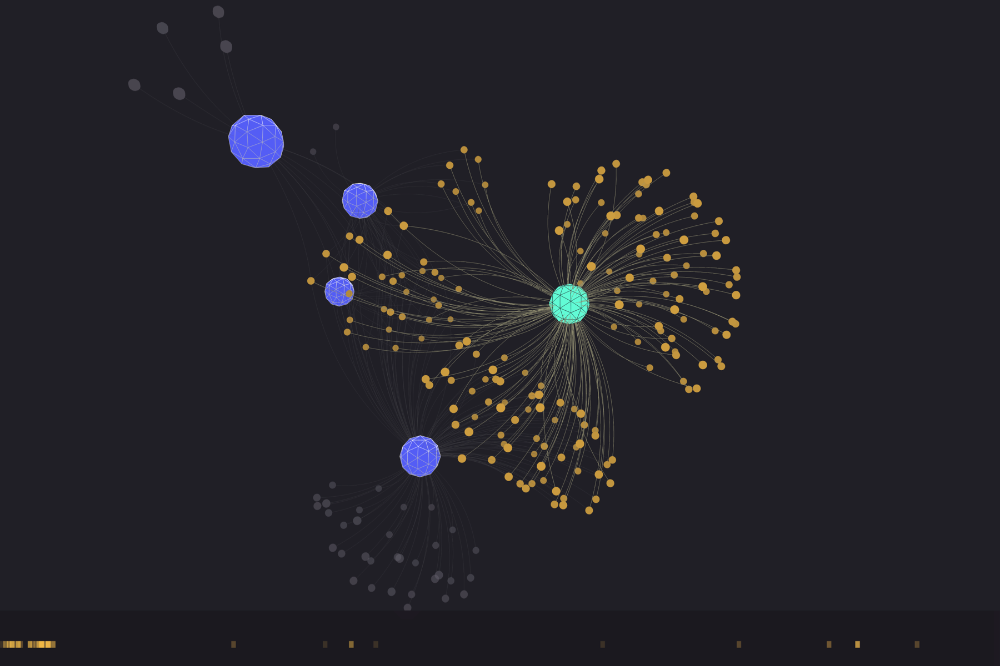
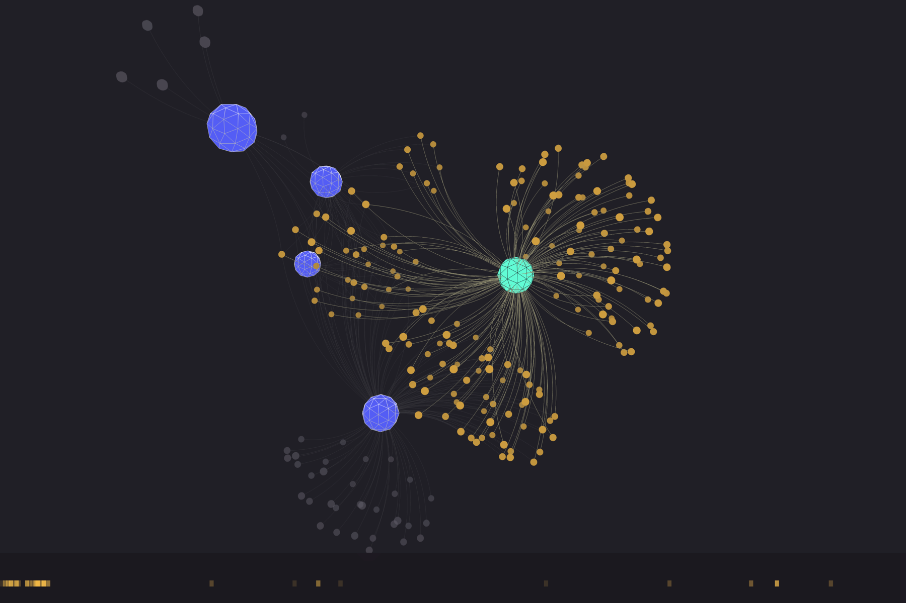
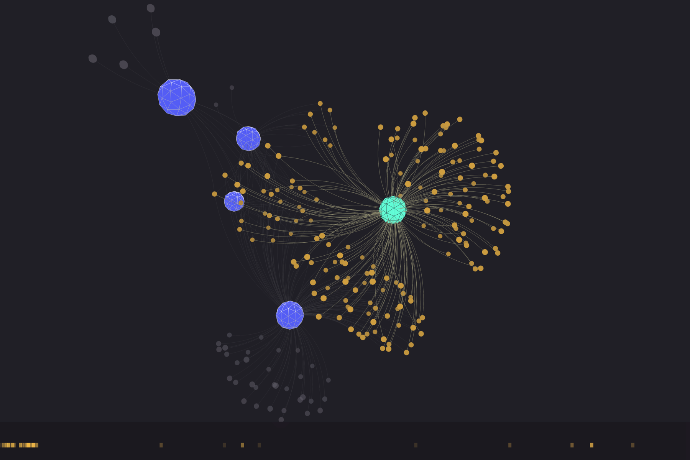

Viralnet
2020
Design & Code
collaboration with Russell Neches
Github
Data visualization of virus genomes, contributing to scientific research by Dr. Russell Neches (computational biologist at the Berkeley Genome Institute).
I'm designing & coding the 3D graphics in javascript using the 3d-force-graph library, which combines D3 with three.js
Force-directed graphs are commonly used in computational biology, but they are commonly an ugly mess and exceedingly difficult to navigate. This is our aspiration for a scientific tool for the future.


Loading nodes gradually gives a very different effect.



 

